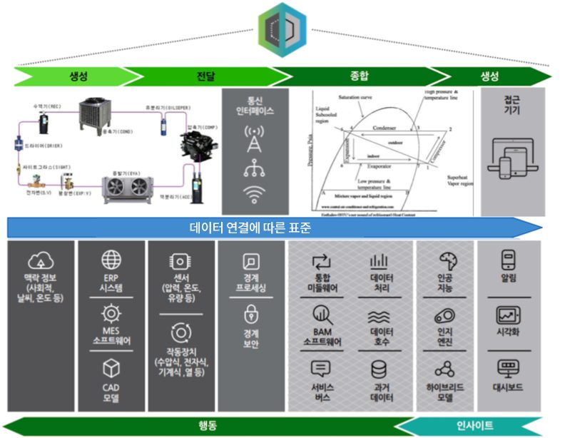
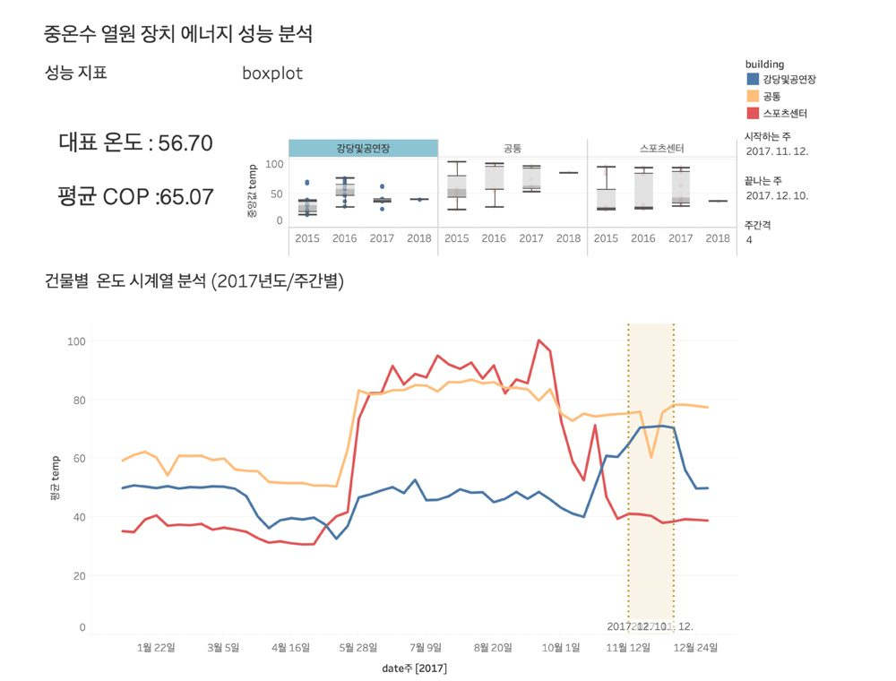
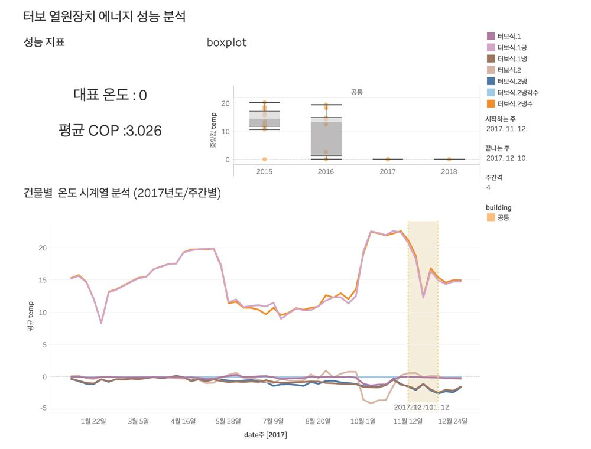
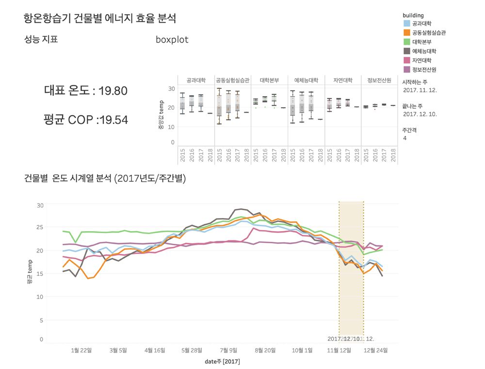
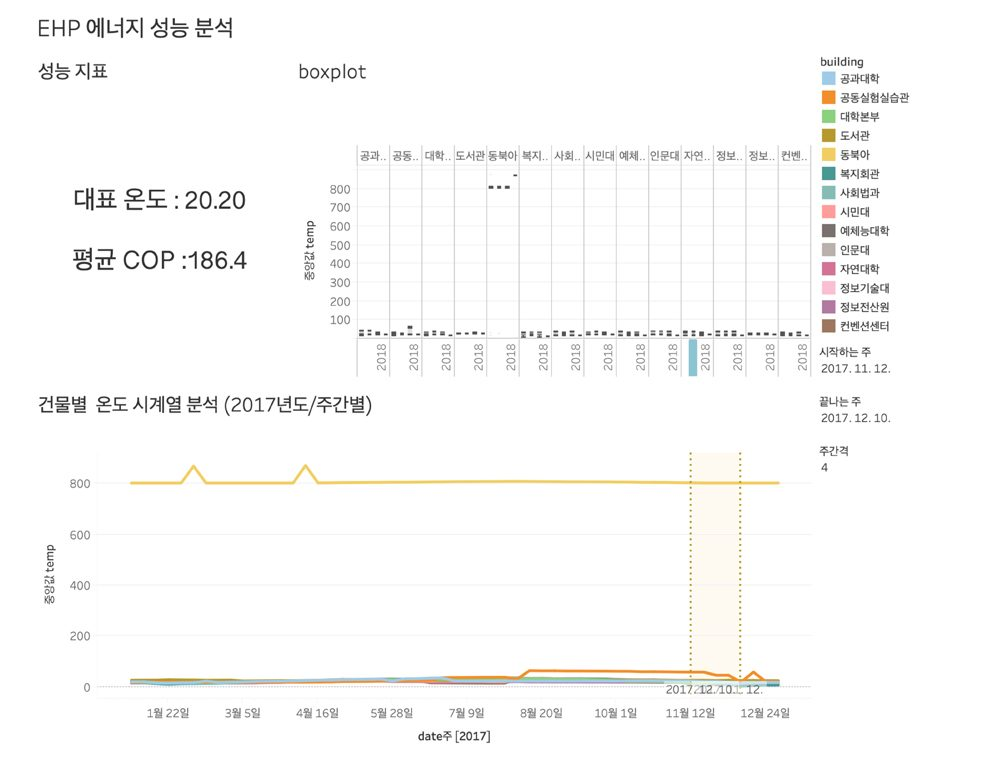

시뮬레이션과 모델링의 통합 솔루션
에너지 분야의 디지털 트윈은 실제 설비의 측정 데이터를 기반으로 시뮬레이션과 모델링을 통합하여 에너지 성능을 분석·예측하는 기술입니다.
모니터링 부문
히트펌프 분석 장치 내의 압력 센서, 외기에 설치한 TESTO 557의 측정 데이터를 수집하여 분석에 활용합니다.

데이터 전처리 : 무선 데이터 검침 에러
결측치 처리
- 실시간(Near Real Time) 탐색 : 측정 주기(30~31초) 이후에 NA 값으로 측정되는 데이터를 결측 데이터로 판별
- 배치(Batch) 탐색 : 연속된 측정데이터의 간격을 구하여 측정주기를 벗어나는 주기의 범위를 결측 범위로 탐색
- 실시간 보정 알고리즘 : 선보정 — 가장 가까운 시퀀스 데이터를 추출하여 보정 / 후보정 — 선보정 이후 측정되는 데이터가 보정값과 다를 경우 보정 전후 각각 10개의 데이터를 추출하여 최빈값으로 보정
- 배치 보정 알고리즘 : 결측 데이터의 전후 시퀀스 10개의 데이터를 추출하여 최빈값으로 보정
오측치 처리
- 데이터 측정 시 미리 측정한 Min, Max를 벗어나면 오측 가능 데이터로 판단, Illogical(type error, negative number)한 경우 오측으로 판단
- 이전 측정 데이터와 연속적으로 값의 차이를 구하여 측정일 기준으로 측정값이 range(max-min) 값을 더하거나 뺀 값의 범위를 벗어나는 데이터를 오측치로 판단
성능 평가 모델
에너지 밸런스 모델을 사용한 히트펌프 평가 분석 알고리즘입니다.
- 온도 : 스카다 데이터에서 수집
- 유량 : 운영 일지를 통해 정량 유량으로 계산
- 전기 : Smart 전력 데이터에서 용도별로 구분하고 예측
- 현장에서 취득 가능한 정보만 이용하여 최적의 성능 지표 제시 — 성능지표 개발 = (데이터 분석 예측 성능, 시뮬레이션 성능, 이론치)
데이터 예측 모델 : 데이터 분석 기반의 앙상블 알고리즘
앙상블 기법 : 4개의 시계열 기법 중 최적의 정확성 기법을 선택하여 분석 결과를 도출합니다.
| 분석기법 | 함수 이름 | MAPS (실제값과 예상값의 정확성) |
|---|---|---|
| 시계열 분해법 | STL | 93.04461 |
| 다중계절성 | TBATS | 22.03084 |
| 분산분석법 | ARIMA | 64.19126 |
| 신경망분석법 | NEURALNET | 0.00000 |
- 5분 주기 20분의 다중 계절성 분석을 할 경우 93.04% 달성
- 간헐적으로 사용하는 기기는 주기성이 없기 때문에 주기를 줄이고 예측 시간을 짧게 하면 예측율이 높게 나타남
- 시계열 분석법을 사용하는 경우 주기를 갖는 경우가 아니면 다른 변수를 찾고 그 변수를 통한 회귀분석이 적절함
인포그래픽 : 다양한 열원기기 분석을 위한 사용자 인터페이스

급탕열원 에너지 성능 분석

난방열원 에너지 성능 분석

냉동기열원 에너지 성능 분석

냉열원 에너지 효율 성능 분석

온열원 에너지 성능 분석

중온수 열원 장치 에너지 성능 분석

터보 열원장치 에너지 성능 분석

항온항습기 건물별 에너지 효율 분석
※ 이미지를 클릭하시면 큰 이미지로 확인하실 수 있습니다.